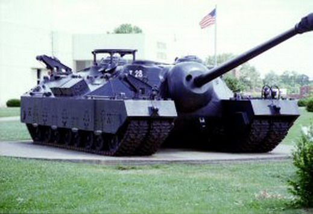

Czołg, który stał się działem pancernym - T28 Super Heavy
Prace nad czołgiem ciężkim oznaczonym początkowo jako T28 Heavy Tank rozpoczęto w marcu 1944
roku.
Od początku projekt zaliczał liczne opóźnienia, ponieważ sprostanie wymaganiom postawionym
przez Ordnance Department wymagało zbudowania wyjątkowo dużego i ciężkiego pojazdu.
W trakcie prac zmianie uległy również niektóre założenia, m.in. stwierdzono, że opancerzenie czołgu
powinno mieć grubość ponad 300 mm z przodu (pancerz ten miał chronić przed pociskami z wszystkich
znanych niemieckich dział, zwłaszcza kalibru 88 mm),
co doprowadziło do znacznego wzrostu masy czołgu – do ponad 80 ton.
"Better to fight for something, than live for nothing"
-George S.Patton